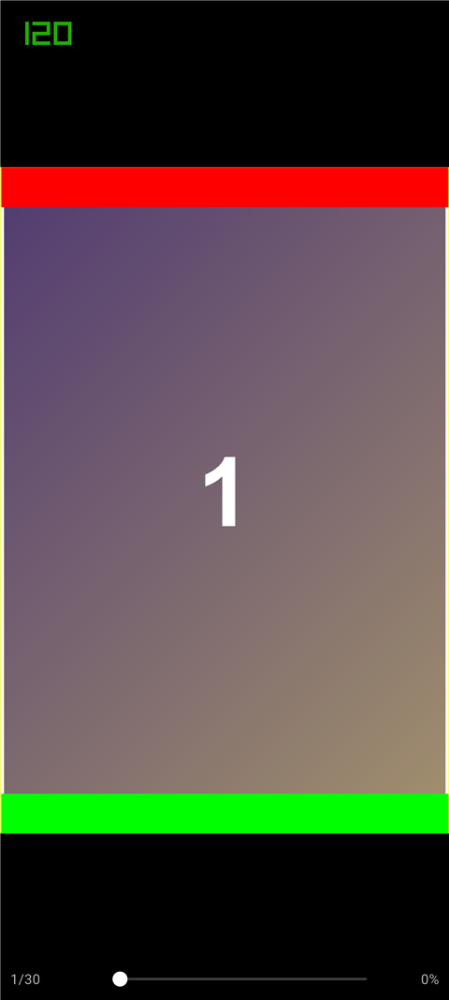
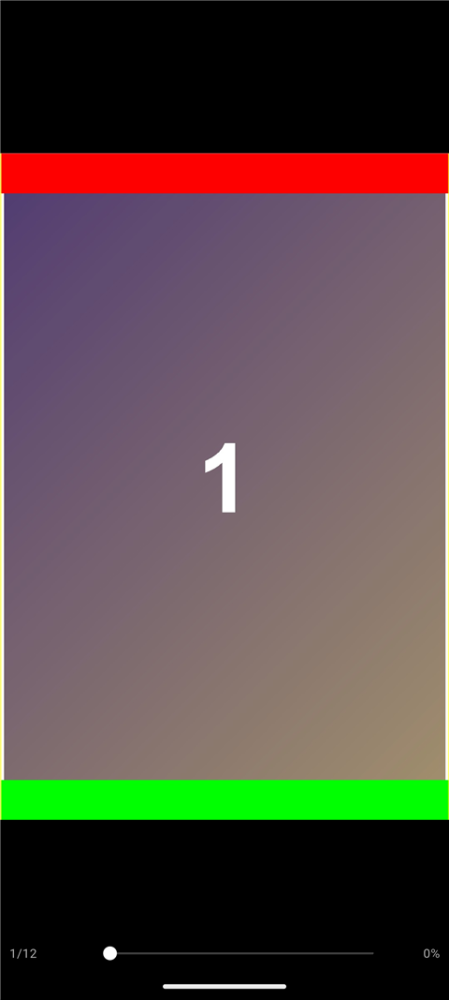
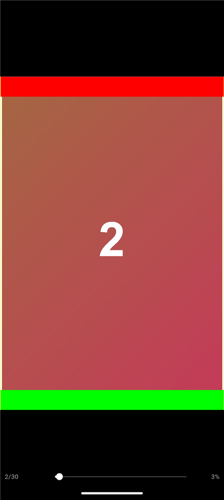
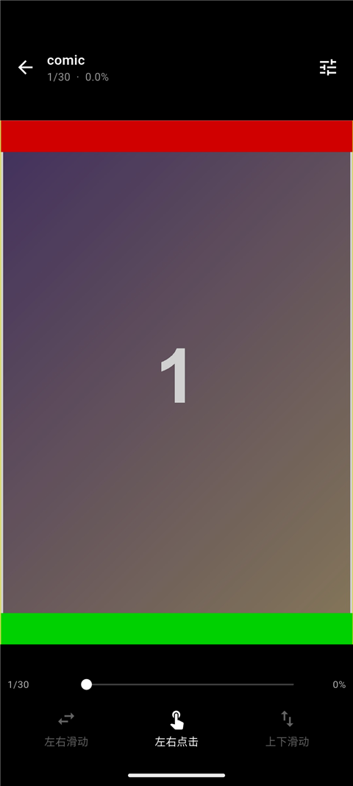

inkScroll 是一个 Android 优先的本地漫画 / 文档阅读器。 压缩包不解压整个文件、图片永远保持原始比例、多页无缝拼成一条长页， 还能直接连你的 NAS 在线看漫画 —— 并针对 120Hz 高刷屏做了适配。
每一条都对应一个真实踩过的坑，而不是功能清单上的凑数项。
自己实现 ZIP 中央目录解析（含 Zip64），只解真正要显示的那一页；打开 1GB 的压缩包和打开 1MB 的一样快，不会一次性解压全部内容。
只给宽度约束、高度交给解码器决定。图片宽度撑满屏幕，高度按真实宽高比自动算出——同时做到不变形、不裁切、不留白。
上下滑动模式下，下一张的顶部就是上一张的底部，没有间隙也没有高度跳动——占位用嗅探到的真实比例撑开，加载完成不重排。
国产 ROM 默认把应用锁在 60Hz。inkScroll 主动申请显示模式 + 在绘制 Surface 上声明帧率，实测跑满 120fps（vsync 8.33ms）。
Android 11+ 的分区存储让常规方案彻底失效。这里直接用 SAF 原生读取内容并复制进应用目录，选完即用，还能按扩展名过滤。
2.jpg 排在 10.jpg 前面，而不是字典序。导入前还能手动调整顺序，上移、下移、置顶都支持。
用 WebDAV 直连飞牛 OS / 群晖 / 威联通 / Alist。书架分本地库 / 在线库，选一个目录即可把整个漫画库一次性导入。只列目录不下载，看过的自动缓存。
左右翻页：拖动和点击两侧翻页同时可用，中间呼出菜单。上下滑动：适合条漫的连续长页。
每本书独立记忆阅读模式与进度，全套设置本地持久化，不需要账号、不联网、不收集任何数据。
真机（vivo V2417A / Android 16）与模拟器实测，测试图带红/绿边框以便一眼看出有没有被裁切。




这个项目踩过的坑比功能多。下面几条都有实测数据支撑。
| 问题 | 根因 | 解法 |
|---|---|---|
| 图片永远加载不出来 | whenComplete 返回的代理 Future 不完成，await 永久挂起 |
清理逻辑放进 finally，直接返回原始 Future |
| 上下滑动完全失效 | 注册了 onDoubleTap 后，双击识别器在 pointer down 时就抢占手势竞技场 |
滚动模式不注册双击，让 Drag 拿到手势 |
| 滑动持续卡顿 | 占位高度为 0，解码后才变真实高度，RenderSliverList 每次重排下方全部内容 |
占位直接用嗅探到的比例撑开，高度零变化 |
| 文件夹导入静默失败 | Android 11+ 禁止授权存储根目录；file_picker 的路径转换在 API 30+ 被跳过 |
自研 SAF 插件，不转路径、直接读内容 |
| 高刷屏只有 60fps | 应用从未调用 Surface.setFrameRate，系统保守给 60Hz |
同时申请显示模式 + 在 Surface 上声明 120Hz |
| 渲染死循环 | 在 LayoutBuilder 的 builder 里改状态并 notifyListeners |
build 期间不做任何副作用，重建推迟到帧末 |
Flutter 3.47 / Dart 3.13，状态管理用 Provider + ChangeNotifier；
ZIP 解析自己写（只借用 archive 的 Inflate）；
文件夹导入用自研 Kotlin SAF 插件。
解码宽度限制到屏幕物理宽（一页约 6MB 而不是 48MB）； 页缓存 32 项 / 128MB；进度通知做节流，滚动时不再每帧重建进度条。
仓库里的 DESIGN.md 记录了完整架构决策与取舍，
README.md 有每一轮修复的根因分析——包括那些失败的尝试。
支持 飞牛 OS（fnOS）、群晖、威联通、Alist、Nextcloud —— 只要 NAS 开了 WebDAV 就行。不需要装任何服务端插件。
飞牛 OS：设置 → 文件服务 → WebDAV → 开启。记住端口（默认 5005）与路径（通常 /dav）。
App 右上角 设置 → 在线库 → 添加 WebDAV 库，填 http://192.168.1.10:5005/dav 与账号密码。连接会被记住。
进入放漫画的目录，点「添加为库」——它下面每个含图片的子文件夹都会变成一本书，全部进「在线库」。不下载整本，翻到哪页拉哪页。
| 行为 | 说明 |
|---|---|
| 导入时 | 只发一次 PROPFIND 列目录，不下载任何图片，并只用前 64KB 嗅探少量图片的尺寸 |
| 翻页时 | 拉当前页 + 后台预取前后各 2 页；拉下来的页落盘缓存，第二次看就是本地文件 |
| 断网时 | 已缓存的页照样能看，没缓存的会提示网络错误 |
| 连不上时 | 会区分「地址不对 / 账号错 / 根本不是 WebDAV / 自签证书」，并给出可操作的建议 |
也可以在电脑上先诊断：dart run tool/webdav_probe.dart <URL> <用户名> <密码>
密码存在应用私有目录，并做了一层 XOR + Base64 混淆。 必须说清楚：这是混淆，不是加密 —— 密钥编译在 apk 里。 更推荐的做法是在 NAS 上单独建一个只读的 WebDAV 账号给阅读器用， 这样就算泄露也只能读到指定目录。
arm64-v8a；老设备选 armeabi-v7a；模拟器选 x86_64。从源码构建：
git clone https://github.com/BaiFeng940/inkscroll.git cd inkscroll flutter pub get flutter build apk --release --split-per-abi